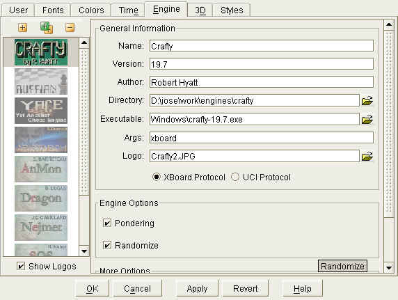

|
|
jose 1.4.1 |
|

Select a chess engine. You can play games against this engine or use it for analysing games.
Use the list on the left to select an engine.
Use the  button to setup a new engine configuration. You will be asked to look for the executable file.
button to setup a new engine configuration. You will be asked to look for the executable file.
If the selected engine responds to the UCI protocol, it will fill in most fields automatically.
Use the  button to remove a configuration. Note that this will just remove the configuration from the list.
It will not delete the engine from your hard disk. Also, you can use the "Revert" button to restore the previous settings.
button to remove a configuration. Note that this will just remove the configuration from the list.
It will not delete the engine from your hard disk. Also, you can use the "Revert" button to restore the previous settings.
Use the  button to create a duplicate of the current configuration. This allows you to use
different configuration settings with the same engine. You can use the Name field to assign it a distinct name.
button to create a duplicate of the current configuration. This allows you to use
different configuration settings with the same engine. You can use the Name field to assign it a distinct name.
Contains general information about the Engine
The Engine's name, as it will appear in the game score.
You are free to edit this fields. For example, if you like to use the same engine with different settings,
you could distinguish them by this field.
The program version. This information is optional.
The author of the program. This information is optional.
The directory on your local hard disk.
The executable file. Please take care to select the correct file !
A logo image that will be displayed for this engine. This field is optional.
Choose this option if the engine uses the so called XBoard protocol for communication with jose.
Usually you should not modify this setting unless you know what you're doing.
Choose this option if the engine uses the so called UCI protocol for communication with jose.
If you create a new configuration for an UCI engine, this option should be selected automatically. You should not modify it, unless you know what you're doing.
This panel lets you configure various options that influence the playing style of the engine.
The number of options and their settings differs quite a bit. Refer to the engine's manual for details.
Some commonly used settings are explained below:
Turns on pondering, i.e. the engine will use the opponent's time for calculation.
If the opponent plays the expected move, the engine can respond faster.
This option is turned on by default. Turning it off reduces the playing strength of the engine.
Introduce a slight random factor when choosing a move. This option might make the engine choose a greater variety of moves.
Select the number of variations that will be displayed during calculation (i.e. the engine will also calculate the second best moves,
the third best moves, etc.)
This option is very interesting for analysis but it might also reduce the playing strength.
It is only available for a few UCI engines, like Ruffian, or Aristarch.
Set the size of the engine's hash table, that is a memory area used for faster calculation.
Size is in MB.
Enter the path to Nalimov Endgame Table Bases, if they are installed on your system,
Set the size of the memory cache for Endgame Table Bases.
Reset all options to their default values. This is only available for UCI engines.
Use this field to enter a sequence of commands that is sent to the engine on startup. See the Crafty configuration for an example, and consult the engine's manual for details.
|
|
© 2002-2006 jose-chess.sourceforge.net |
|